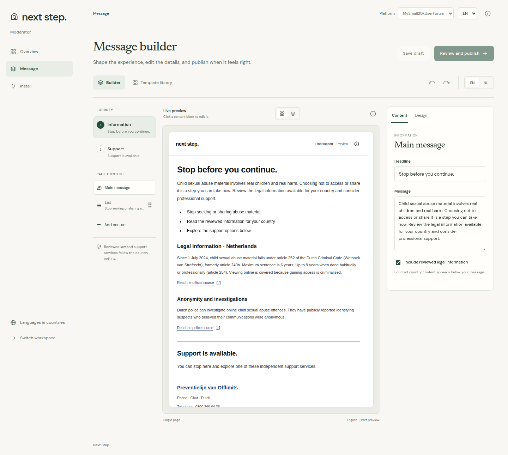
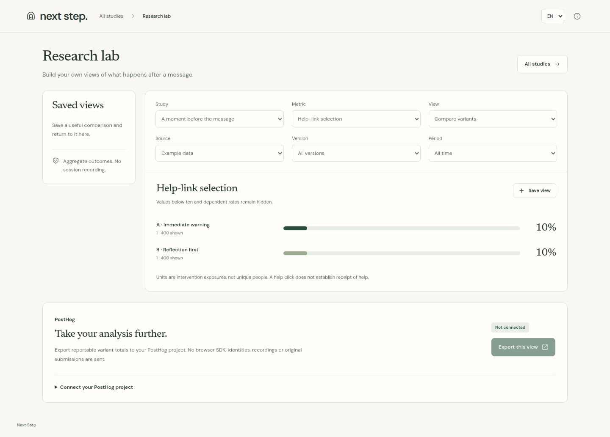

reports the IWF confirmed
in 2024
They contained, linked to or advertised child sexual abuse imagery.
Every intervention is an opportunity
to offer a safer next step
Internet Watch Foundation, Annual Data & Insights Report 2024Reports represent URLs or direct child reporting services. This is not a count of victims or global prevalence.
A deployable intervention toolkit with a visual message builder.

Working product: the moderator message builder
Host platforms supply detection. Next Step delivers the intervention.
2.8M
reThink chatbot displays
490
recorded support-site
click-throughs
Our hypothesis puts reflection before education and support.We compare experiences to learn what people engage with.
IWF / Lucy Faithfull Foundation, reThink chatbot evaluation, March 2022 to August 2023These figures describe reThink, not Next Step. Our intervention sequence remains a design hypothesis.
For your website, forum or Discord community
6 distinct designs with editable, localized content
Opt-in studies, even random assignment and aggregate results
No raw inputs or visitor profiles. Counts below 10 stay hidden.

Working product: the independent research lab
Research screen contains synthetic demonstration data. Next Step has not yet established prevention efficacy.